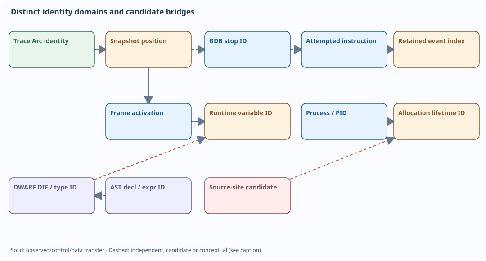
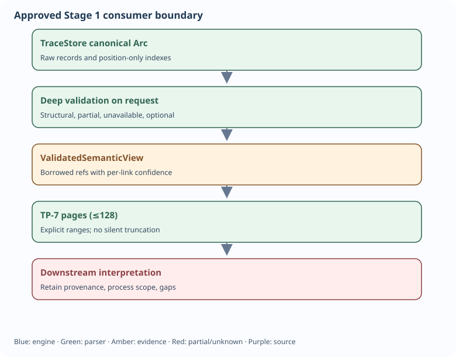

7 · Evidence and identity contracts #
Two terms first #
| Term | Meaning |
|---|---|
| Identity domain | What a number identifies: a debugger stop, an array position, a process, a heap lifetime. Each has its own rules. |
| Provenance | Evidence of where a pointer actually came from, which is more than "which recorded block contains this address." |
>
Evidence can't be made more certain by reusing a number from the wrong domain. Stage 1 keeps four things distinct, each with its own identities: the stopped execution, the retained recording, static metadata, and separate diagnostic runs.
Identity domains #


| This… | …is not the same as | Because |
|---|---|---|
| Snapshot vector position | GDB stop ID | Different counters |
| Attempted instruction | Retained instruction-event position | Retention and gaps are accounted separately |
| Frame activation (one call of a function) | A variable's address | Different things |
| PID-local allocation event / trace-local lifetime ID | A numeric address | They're linked by recorded wrapper events and reconstructable boundaries |
| DWARF declaration/type IDs | AST declaration/expression IDs | Two separate static providers |
A TraceStore position | A valid reference elsewhere | References also require the same canonical trace owner |
| Matching source site (file + line) | Exact same-execution allocation identity | At best a candidate |
Facts, candidates and unknowns #
| Evidence | Supported interpretation | Unsupported promotion |
|---|---|---|
| GDB stop and bounded read | Observed stopped-state bytes/status | Initialized C object, or every intermediate instruction |
| DWARF DIE and optional AST node | Compiled metadata or source syntax | Proof that a syntax node executed |
| Wrapper event and same-PID lifetime | Observed interceptor event and qualified predecessor | Origin inferred from a reused address |
| Valgrind/ASan report | Independent diagnostic | Primary-run allocation ID from matching line/address |
| Complete observed-PID heap history | Verified scope of seen PIDs and the followed inferior | Census of silent fork descendants |
A DIE is one entry in the DWARF data. ASan is AddressSanitizer, the common sanitizer for memory errors. Silent fork descendants are child processes that produced no wrapper events.
Provenance at the public boundary #


Check ValidationReport::is_structurally_sound() separately from whether the trace is partial.
validated_semantic() borrows the store and labels each relationship with one of five confidence levels:
| Level | Meaning |
|---|---|
Definite | Verified for a specific observation, within its documented scope |
Candidate | Compatible evidence, but unproved |
Ambiguous | Several relationships fit |
Unavailable | Not enough evidence |
Contradictory | Structurally rejected |
A contradiction doesn't erase the raw record. Missing evidence is never converted into a negative fact. Bounded consumer pages expose the original trace-scoped references, and Stage 1 intentionally ends there.
Read next #
When an identity looks obvious from printed addresses alone, check schema and identity reference, parser validation and limitations first.